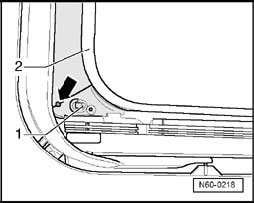

Solar Contact In Assembly Unit, Removing
Solar Contact In Assembly Unit, Removing
- Open sunroof completely.

- Remove headliner -2-
- Release connector on solar contact.
- Remove bolt -arrow-.
- Pull solar contact -1- out of guide from underneath assembly unit.